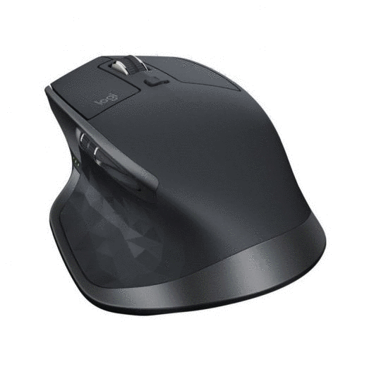
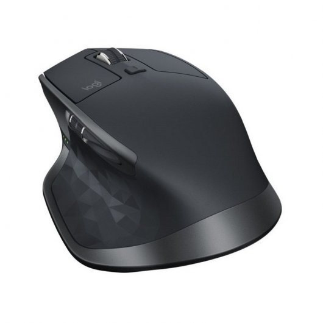
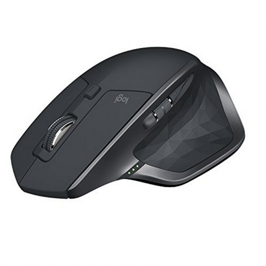
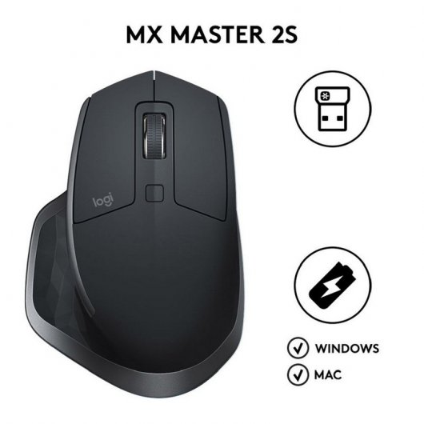
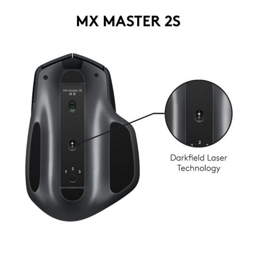

FUTURETECH STORE |
|      |
Logitech MX Master 2S
84,99€
MX MASTER 2S es el ratón de precisión definitivo para usuarios avanzados.
Aprovecha la potencia de Logitech FLOW y lleva el uso de varios ordenadores a un nuevo y audaz nivel. Controla hasta tres ordenadores y mueve texto, imágenes y archivos entre ellos fácilmente. Desplázate por documentos y páginas Web con mayor rapidez y facilidad gracias al botón rueda de velocidad adaptable. MX MASTER 2S está listo en cuanto tú lo estés. Conserva una carga completa durante más de dos meses. Y en sólo tres minutos obtiene energía suficiente para un día completo de uso. Funciona prácticamente en cualquier superficie con seguimiento de alta precisión, incluso sobre cristal con grosor mínimo de 4mm. Su forma contorneada creada a mano te permite apoyar la mano y la muñeca en una posición cómoda y natural.
Características
Logitech Flow: este ratón inalámbrico hace posible el control de varios dispositivos y copiar-pegar contenido y documentos entre ordenadores
Seguimiento de alta precisión Darkfield: el ratón inalámbrico MX Master 2S funciona en cualquier superficie, incluso sobre cristal, con alta precisión de hasta 4000 dpi
Batería recargable: mediante el cable de carga micro USB, en tan sólo 3 minutos puedes obtener energía suficiente para un día completo de uso, una carga completa puede durar hasta 70 días
Experiencia de desplazamiento: botón rueda de velocidad adaptable que cambia automáticamente del desplazamiento clic a clic al superrápido, más botón para el pulgar para desplazamiento horizontal
Forma cómoda: MX Master 2S se ha diseñado con esmero, su forma se amolda a la mano y proporciona una posición natural y cómoda durante muchas horas
Especificaciones
Requisitos del sistema
Sistema operativo Windows soportado: Si
Peso y dimensiones
Ancho: 126 mm
Profundidad: 48,4 mm
Altura: 85,7 mm
Peso del ratón: 145 g
Ancho de receptor: 1,44 cm
Fondo del receptor: 6,6 mm
Altura de receptor: 1,84 cm
Peso del receptor: 2 g
Control de energía
Fuente de energía: Baterías
Tecnología de batería: Polímero de litio
Capacidad de batería: 500 mAh
Dispositivo de entrada
Interfaz del dispositivo: RF inalámbrico
Utilizar con: Oficina
Tipo de botones: Botones presionados
Cantidad de botones: 7
Tipo de desplazamiento: Rueda
Resolución de movimiento: 1000 DPI
Uso recomendado: Universal
Número de ruedas de desplazamiento: 1
Personalizable resolución movimiento: Si
Ergonomía
Alcance inalámbrico: 10 m
Recargable: Si
Diseño de plancha ergonómico: Si
Diseño
Factor de forma: mano derecha
Color del producto: Negro
Interfaz de receptor inalámbrico: USB
Receptor unificador: Si
Coloración de superficie: Monótono
|


{kind=link}
{kind=link}
{kind=link}
{kind=link}